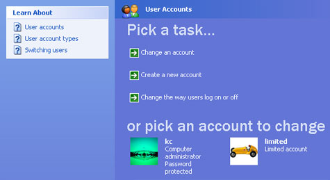
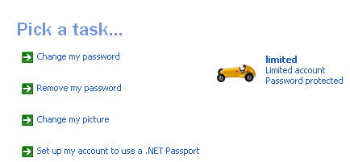
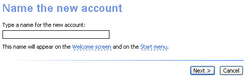
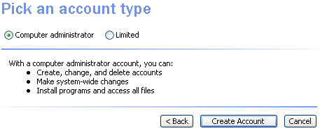
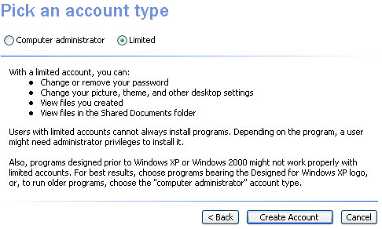
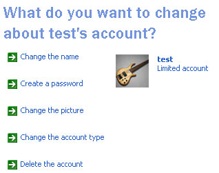
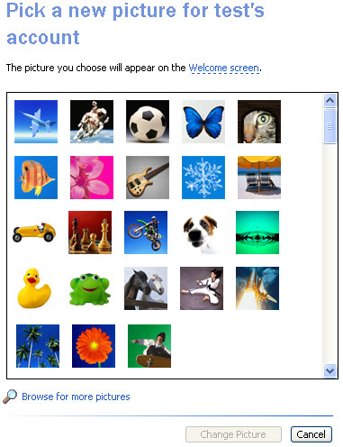
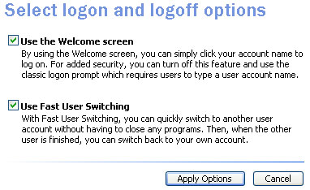
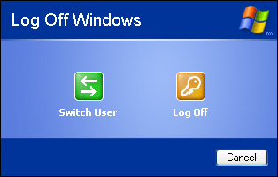

Windows XP User Accounts
This tutorial assumes that you have set the Control panel to Classic
View. To see how to do this, click this link (opens in a new window):
Set the Control Panel to
Classic View
If you have only one computer in the house, but more than one person
who uses it, you can set up a separate user account for each person.
That way, they can have their own settings, and customisation. For example,
they can have their own desktop wallpaper that you won't see when you
login to your account. Here's how to set up a new user account.
User Accounts
To get at the settings for the User Accounts, click Start and
then Control Panel. From the Control Panel, double click User
Accounts. This will bring up the following dialogue box:

In the image, we have two accounts already set up. We have an account
called kc, and one called limited. Each has its own icon.
But notice that one account has "administrator" next to it,
and the other has "limited account". It's important to know
the difference between the two.
Administrator Account or Limited?
An administrator account is one that has full rights over what you
can do on the computer. You can install software, make changes to the
whole of system, and generally create merry havoc, if you wanted to!
A limited account, as its name suggests, limits what you can do to XP's
settings. For example, if you're logged in as the administrator, you
can change the password for all User Accounts that have been set up.
You can even delete accounts, if you want. If you're logged in with
a limited account, you can't do any of this. If you access the User
Accounts screen on a limited account, you'll see this:

If you compare the two, you'll notice that there is no option to change
an account, or to create a new one.
It's a good idea, if you have children using your computer, to set
them up with a limited account. That way, you control what they can
and can't do to your PC.
There is another issue, as well. When surfing the internet, if your
kids have full admin rights then all kinds of harmful programmes can
be run in the background, unbeknown to them. On a limited account, these
programmes won't have the rights to install themselves. In fact, some
experts advocate that you yourself shouldn't surf the internet on anything
but a limited account. If you need to install software, or to make system
changes, then you can always switch users to the main Administrator
account, and do so when you're offline.
If you have already set up another User Account, then check what rights
are given. If they both say Administrator, and one of you is not a responsible
adult, then you may want to change the rights that the other has.
Of course, there are plenty of responsible, security-conscious kids
about who have parents or guardians who are a danger to the computer
(and the rest of us)! If so, you may want to change their rights!
How to set up an XP User Account
To set up a new account, then, you need to be logged in with an Administrator
account. Click on "create a new account" to see the following
screen:

Type a name for the account, and click the Next button. You'll
then see this:

By default, the Administrator account is chosen. The bulleted lists
tells you what you can do with this type of account. Click the Limited
option to see the following:

As you can see, the full rights granted to the Administrator are not
available to a limited user.
Whichever account you choose, though, click the Create Account button.
You will then be taken back to the main screen. Click the icon for your
new account to see the following options:

There are five options, in the image. Click an option to make your
changes. Click "Change the picture", for example, the see
the following screen:

Select a picture from the list, and click Change Picture. Or you can
click Browser for more pictures, if you prefer to use one of your own.
Switch Users
Windows XP allows you to switch between users with a click of a couple
of buttons. To set this up, go back to your main administrator account
page (click the Home button at the top). From the list, select "Change
the way users log on or off." You'll see the following:

To allow you to switch users, make sure there is a tick in the box
"Use Fast User Switching". Then click the Apply Options button.
What this allows you to do is to click the Start button in the bottom
left of your screen, and then click "log off":
Then click the Switch Users button to get back to the Welcome screen,
where you can select a new account to log in to.

Without a tick in the box for Use Fast User Switching, nothing
happens when you click the Switch User button above.
<--Back One Page Move
on to the Next Part-->
<--Back to the
Beginner's Computing Contents Page
View all our Home Study Computer
Courses
 home
home